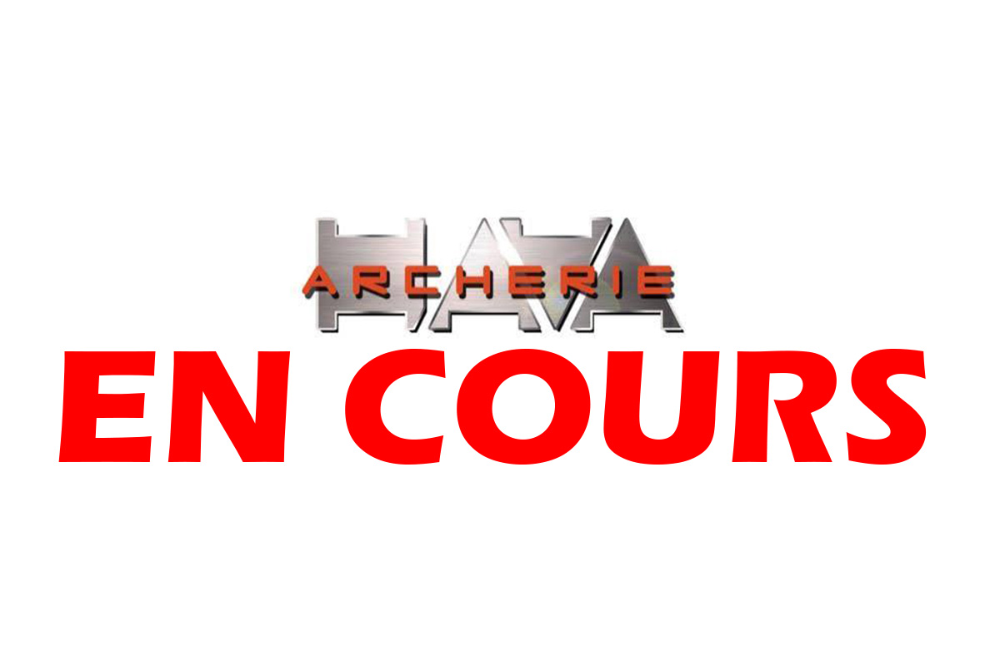
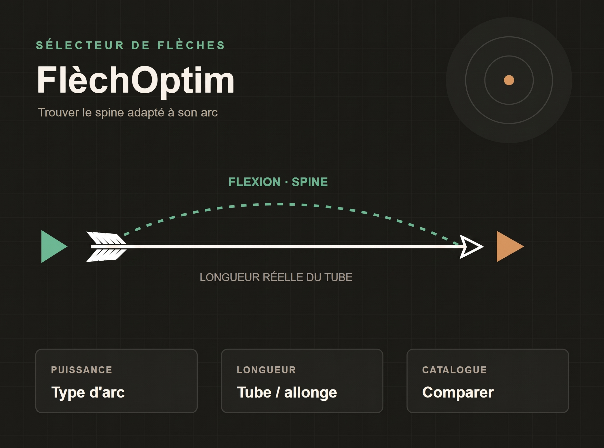
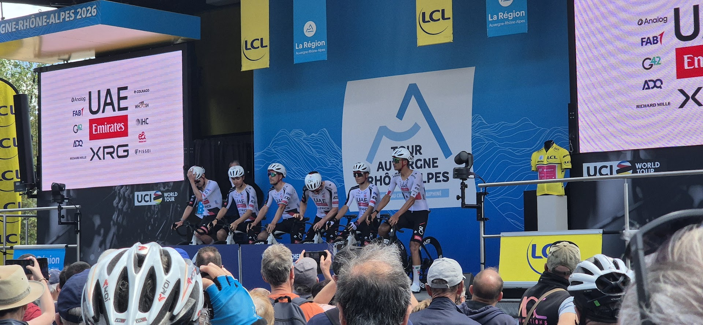

Sélection créative
Tous
mes projets.
Une sélection de projets en direction artistique, communication visuelle, design numérique et développement web.

Campagne Lacoste
Identité de campagne, vidéo et site WordPress.
Voir le projet
Mes créations
Photographies et explorations visuelles personnelles.
Voir le projet
Identité de marque Hava Archerie
Refonte graphique de l'identité de marque.
Voir le projetMagazine Interface
Coordination d’équipe, recherche de sponsors, contribution à la maquette et rédaction d’un article.
Voir le projet
FlèchOptim
Un sélecteur interactif pour choisir et comparer des flèches de tir à l'arc.
Voir le projet
Tour de France
Série de cartes graphiques consacrées aux coureurs cyclistes.
Voir le projet.jpg)
Rallye des Cardabelles
Reportage photo au cœur d'une spéciale, le 5 octobre 2024.
Voir le projet